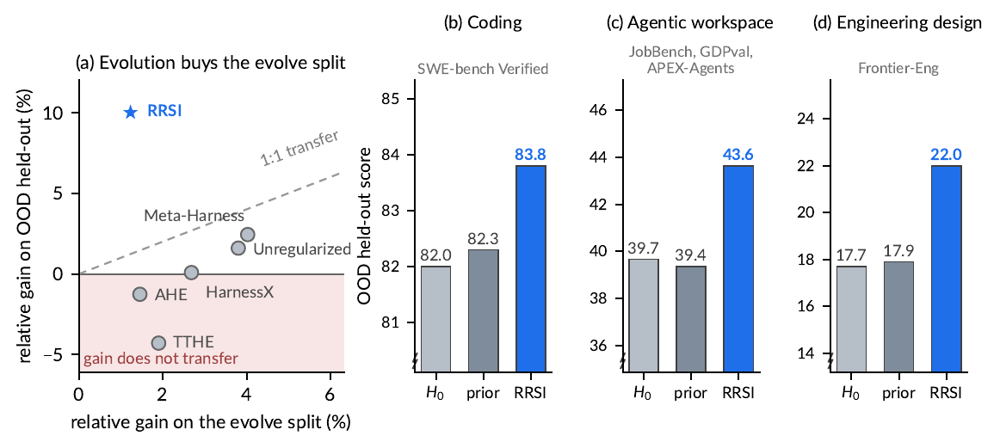
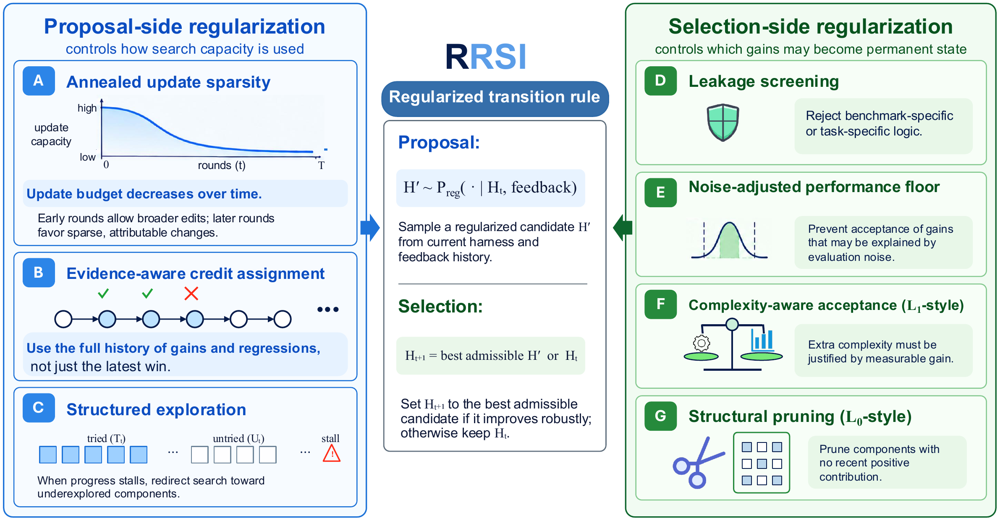
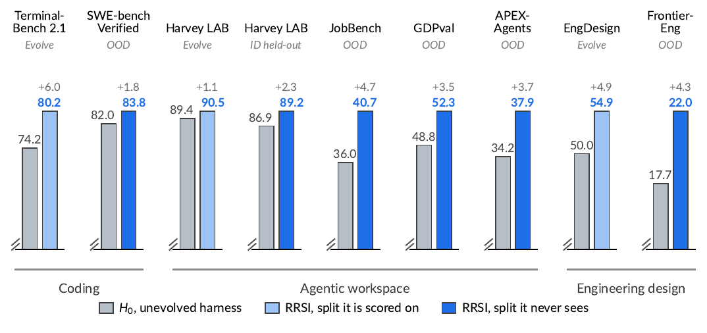
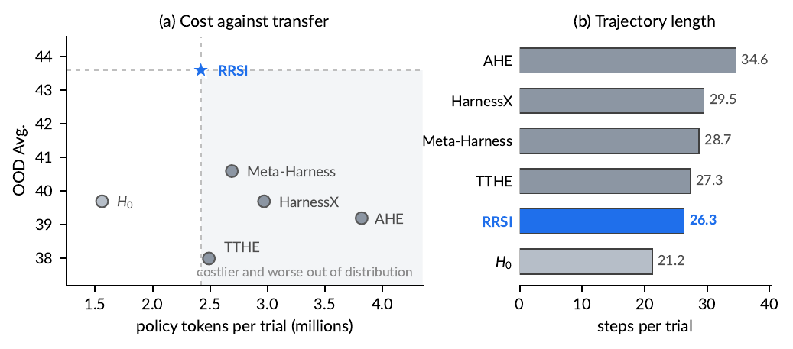

01论文概览
本文研究如何让 Agent 的运行系统在多轮修改中稳定进步，基础模型始终保持不变。核心风险是：如果系统反复根据同一批任务提出修改并挑选赢家，它会逐渐记住这批任务。因此，分数上涨不一定代表能力能够迁移到新任务。
核心结论
理解这篇论文，需要先区分研究对象、方法主张、实验证据和证据边界。以下四点构成全文的最小逻辑闭环。
- 研究对象：RRSI 不修改模型权重，而是约束运行系统从当前版本 Ht 变为下一版本 Ht+1 的方式。提示词、工具、记忆和子智能体仍可编辑。
- 核心主张：反复使用固定的进化任务集，容易让系统过度适配这些任务。候选修改只有同时通过泄漏、随机波动和额外成本检查，才会被永久保留。
- 关键证据：完整系统在编码、办公任务和工程设计三个领域的 6 个留出测试集上都超过初始版本 H₀。工作空间实验还显示：训练任务上的涨幅较小，未见任务上的涨幅反而更大。
- 结论边界：实验支持整套规则有助于迁移，但无法判断哪一处具体修改真正带来收益。论文也没有验证泄漏检查器的准确率、长期连续进化的稳定性和完整搜索成本。

阅读要点：Meta-Harness 与无正则进化在 evolve split 上提高更多，却落在理想的 1:1 迁移线下；RRSI 放弃一部分集合内增益，换得更高留出收益。谨慎解读：该图比较的是完整系统，不能单独证明每个正则器都沿作者提出的因果路径生效。
02研究背景与问题定义
常见做法是先读取当前系统的执行记录，再让大模型提出修改，最后在同一批任务上选出得分最高的版本。单次评测并不是问题。问题在于这批任务同时参与“出题”和“判卷”，反复使用后就会变成隐性的训练数据。
主要失效机制
论文把问题分解为三个相互强化的机制。三者分别对应“学错对象”“把随机波动当收益”和“用不断增加的复杂度购买局部分数”。
- 记住具体任务：候选可能直接写入任务名、实体、答案或特定数值，也可能用更隐蔽的规则迎合固定任务。这样能提高当前分数，却不会形成可复用能力。
- 把运气当收益：每次执行都带有随机波动。如果每轮只保留最高分，系统就会不断挑中偏乐观的结果，并把偶然胜出的版本永久保存。
- 复杂度不断增长：只按分数选择时，系统没有动力删除无用提示、工具或控制逻辑。只要新结构带来一点局部收益，推理文本和操作步骤就可能持续增加。
相关方法与问题边界
与最邻近方法相比，差异不在“能否修改 Harness”，而在反馈如何进入下一状态。下面的对比固定策略、起始 Harness、evolve set 和候选预算，突出永久继承标准的差别。
| 方案 | 固定部分 | 优化对象 | 继承依据 | 主要风险或能力 |
|---|---|---|---|---|
| H₀（不进化） | 策略与 Harness | 无 | 无外层搜索 | 无自适应过拟合，但不能从轨迹改进 |
| Meta-Harness / AHE / TTHE / HarnessX | 冻结策略 | 开放或模块化 Harness | 以 evolve-set 分数为主 | 能自动进化；可能拟合集合、噪声与额外算力 |
| RRSI | 冻结策略与开放编辑空间 | 候选修改与搜索转移规则 | 泄漏、稳定性、成本、历史信用与剪枝 | 优先保留可迁移且值得成本的修改 |
来源：论文 Sections 1–3、Related Work 与附录 “Baseline Methods”。
这些方法都能改动 Harness，并从同一 H₀ 出发，因此 RRSI 的差异不能归因于更大的编辑空间。真正的分界在继承规则：基线主要让 evolve 分数决定下一状态，RRSI 则先构造满足泄漏、稳定性和成本条件的 admissible set，再在其中排序。
Held-out 与 OOD benchmark 不进入搜索目标，所以实验检验的是搜索制度能否仅凭结构偏置获得迁移，而不是直接利用留出反馈调参。这一隔离提高了迁移证据的可信度，但不能替代多次独立搜索的方差分析。
03方法与技术路线
RRSI 从两个位置约束进化。提案侧限制系统一次可以改多少、下一轮该探索什么；选择侧规定什么样的修改才有资格保留。基础模型保持不变，提示词、工具和记忆仍然可以修改。
提案侧与选择侧正则化
提案侧负责生成候选，并逐步缩小每轮修改的范围。选择侧负责验收候选：高分不能绕过泄漏检查，成本更低也不能掩盖明显的性能退化。
bₜ = ⌈bmin + (bmax − bmin) · ½(1 + cos(πt/T))⌉
该式控制候选更新的基数，不限制最终 Harness 的组件总数。早期多个编辑仍共享同一候选级 ΔS 与 ΔC，因此“有实验记录”并不等于完成了逐编辑因果归因。
余弦预算只约束候选更新的基数，另外六项机制分别管理历史、探索、泄漏、稳定性、成本和“不更新”选项。下表把两侧放在同一组判别轴上，便于区分它们在搜索中的职责。
| 位置 | 机制 | 直接作用 | 主要约束 |
|---|---|---|---|
| 提案侧 | 退火编辑预算 | 候选可捆绑编辑数从 3–4 个逐步降到 1 个 | 早期扩展组合，后期接近单改动验证 |
| 实验历史 | 记录假设、diff、分数、成本与接受结果 | 失败也作为负证据，减少重复试错 | |
| 结构化探索 | 停滞时探索未触及组件，并提出删除目标 | 避免搜索长期困在同一局部方向 | |
| 选择侧 | 事前泄漏筛查 | 测分前检查任务名、实体、答案与惰性逻辑 | 明显记忆不得先形成高分反馈 |
| 稳定性底线 | 要求 Ŝ(H′) ≥ S* − δ | 噪声带外的回退不能永久继承 | |
| 成本约束 | 联合判断分数、policy tokens 与结构新颖性 | 限制用大量推理成本购买微小收益 | |
| 保留当前状态 | admissible set 为空时维持 Ht | 不为制造“每轮进步”而强制更新 |
稳定性门槛：Ŝ(H′) ≥ S* − δ 显著增益时：ΔC ≤ β₀ + β₁ΔS 噪声区间内：wₛΔS − w꜀ΔC + wₙν(H′) > 0
论文将这些规则类比为 L₀/L₁/L₂ 正则化，但它们不是对同一个连续参数向量优化范数。正文和附录把更新预算、结构剪枝、成本约束分别解释为 L₀、L₁、L₂-style；Figure 2 的部分标签与此不一致，按正文与公式理解更稳妥。
执行流程
一轮进化可以压缩为四个连续阶段。流程的关键是筛查位于测分之前，而继承位于多重条件之后。
- 运行当前 Ht，汇总失败轨迹与近期实验历史。
- 依据退火预算、历史信用和停滞状态生成候选 edits。
- 先由 critic 筛查，再在 evolve set 上测量分数与 policy tokens。
- 从 admissible set 选出 Ht+1；若集合为空则保留 Ht。

阅读要点：左侧控制搜索容量，右侧决定候选能否成为永久状态，从而把“提出修改”和“证明修改值得保留”分开。谨慎解读：policy tokens 只代理部署推理成本，不包含 proposer、analyst、critic、失败候选和重复评测的外层开销。
04实验设计与结果分析
实验覆盖编码、办公任务和工程设计三个领域。每个领域只在一套任务上改进系统，最终版本随后原样用于未参与搜索的测试集。判断重点不是训练任务上的最高分，而是新任务上的收益、消融结果和成本是否指向同一结论。
实验设置
评测期间，基础模型保持冻结，留出测试集也不会进入搜索过程。不过，提案、分析和泄漏检查仍由同一种模型承担。理解结果时需要记住以下四个条件。
- 冻结基础模型：执行任务、提出修改、分析失败和检查泄漏都使用 Claude Opus 4.8。变化的是运行系统，模型权重始终不更新。
- 任务范围：编码在 89 个 Terminal-Bench 2.1 任务上进化；工作空间在 Harvey LAB 的 120 个任务上进化；工程设计在 61 个 EngDesign 任务上进化。
- 留出测试：最终系统还要在 6 组未参与搜索的测试上评估，包括 40 个同领域办公任务和 5 项公开基准。具体名称与结果见下方主表。
- 评测边界：工程任务使用固定的模拟器和测试程序，不完全依赖大模型评分。但论文没有报告多次独立搜索的方差或显著性检验。
主要结果
主结果同时报告搜索任务和留出任务，避免只看系统已经反复使用过的题目。Harvey LAB 分别报告搜索集和同领域留出集，因此 8 个评测基准共有 9 行结果。
| 领域 | Benchmark / split | 角色 | H₀ | RRSI | Δ |
|---|---|---|---|---|---|
| 编码 | Terminal-Bench 2.1 | Evolve | 74.2 | 80.2 | +6.0 |
| 编码 | SWE-bench Verified | OOD | 82.0 | 83.8 | +1.8 |
| 工作空间 | Harvey LAB | Evolve | 89.4 | 90.5 | +1.1 |
| 工作空间 | Harvey LAB | ID held-out | 86.9 | 89.2 | +2.3 |
| 工作空间 | JobBench | OOD | 36.0 | 40.7 | +4.7 |
| 工作空间 | GDPval | OOD | 48.8 | 52.3 | +3.5 |
| 工作空间 | APEX-Agents | OOD | 34.2 | 37.9 | +3.7 |
| 工程设计 | EngDesign | Evolve | 50.0 | 54.9 | +4.9 |
| 工程设计 | Frontier-Eng | OOD | 17.7 | 22.0 | +4.3 |
来源：论文 Figure 3 与 Section 4.2。
- 结论：RRSI 在 6 个 held-out split 上全部高于 H₀，增益从 SWE-bench Verified 的 +1.8 到 JobBench 的 +4.7；迁移方向跨三个领域一致，但幅度并不均匀。
- 证据：工作空间域的 OOD 三项分别提升 4.7、3.5 和 3.7 点，Frontier-Eng 提升 4.3 Medal points；这比单独报告某个 evolve 集最高增益更贴近中心主张。
- 解释：结果支持完整正则化系统减少固定集合适配，并把一部分收益保留到新任务；冻结工程 verifier 还降低了“只是迎合主观评审器”的可能性。
- 边界：缺少多次完整搜索的方差，使 +1.8 与 +2.3 等小幅差异能否跨搜索随机性稳定仍不确定；同一时间窗评测只能控制基础设施漂移。

阅读要点：编码、工作空间和工程设计的 held-out 条目均未回退，不同评测形态上的同向改善支持完整系统具有迁移收益。谨慎解读：图中只有单组最终结果，没有搜索方差、显著性或逐候选置信区间。
消融与迁移分析
工作空间域提供了最关键的方向性对照：无正则进化更擅长抬高 evolve 分数，RRSI 却把更多收益留到 OOD。分组消融进一步区分提案侧和选择侧的作用，但还不能拆到单条规则。
| 设置 | Harvey Evolve ↑ | ID Held-out ↑ | OOD Avg. ↑ | Tokens / trial ↓ |
|---|---|---|---|---|
| H₀ | 89.4 | 86.9 | 39.7 | 1.56M |
| 无正则进化 | 92.8 | 88.9 | 40.3 | 3.80M |
| 去掉 proposal regularizers | 90.7 | 88.8 | 41.9 | 2.69M |
| 去掉 acceptance regularizers | 91.5 | 88.7 | 41.0 | 3.59M |
| RRSI | 90.5 | 89.2 | 43.6 | 2.42M |
来源：论文 Table 2。OOD Avg. 为 JobBench、GDPval、APEX-Agents 均值。
- 结论：无正则进化使 Harvey evolve 提升 3.4 点，OOD 平均只提升 0.6；RRSI 的 evolve 仅提升 1.1 点，OOD 平均却提升 3.9，达到 43.6。
- 证据：移除 proposal 侧规则后 OOD 平均降至 41.9；移除 acceptance 侧规则后降至 41.0，policy tokens 同时从 2.42M 增至 3.59M。
- 解释：该结果支持“更高的 evolve 分并非更好的搜索目标”，也表明选择侧规则在这一实例中影响更大；正则化改变了收益分布，而非单纯压低复杂度。
- 边界：消融以两组规则为单位，无法判断泄漏筛查、稳定性门槛、成本线或剪枝中的哪一项主导迁移，也无法排除规则间交互。
跨模型迁移与成本
论文还检查了更换基础模型后，方法能否继续有效，以及最终系统运行一次需要多少资源。这两类证据扩大了适用范围，但仍不足以判断从搜索到部署的总成本。
迁移证据：换用 Claude Opus 4.8 后，RRSI 在 Terminal-Bench 和 SWE-bench 上分别提高 6.0 和 1.8 点；换用 Gemini 3.5 Flash 后，分别提高 14.1 和 2.2 点。后者得到的运行框架原样用于更弱的同系列模型，Terminal-Bench 也从 11.2 升到 14.6。收益因此不只出现在一个模型上，但跨模型验证仍只有一次同家族试验。
成本证据：RRSI 每次运行使用 242 万个策略 Token，比无正则进化少 36.3%，但仍高于初始版本的 156 万。论文没有统计提案、分析、审查、失败候选和重复评测的完整成本。因此，部署阶段更省，不能直接推出整个生命周期的总成本更低。

阅读要点：相对四种进化基线，RRSI 同时具有更高 OOD 平均分、更低 policy-token 成本和更少轨迹步骤。谨慎解读：H₀ 的 1.56M tokens 和 21.2 步仍低于 RRSI，且图中不包含发现阶段的外层搜索成本。
05贡献、局限与综合评价
本章先总结 RRSI 已经建立的贡献，再讨论迁移证据的边界和竞争解释。最后提出一项独立研究延伸，它不属于论文已经验证的结论。
论文贡献
以下四层由抽象到具体排列。它们都能映射到论文的方法或实验，但证据强度并不相同。
- 概念贡献：把运行框架自进化的核心风险明确为自适应过拟合，并指出“当前任务涨分”不足以决定修改是否应被继承。
- 系统贡献：用实验账本记录假设、代码差异、分数、成本和接受结果，使提案、筛查、评测与继承过程可以审查。
- 机制贡献：通过退火编辑预算、停滞探索、事前泄漏筛查、噪声底线、成本线和结构剪枝共同限制搜索轨迹。
- 经验贡献：给出三领域的留出提升、两组规则消融、有限跨模型迁移和部署期成本对比，为完整系统的迁移收益提供初步证据。
证据边界与局限
局限按对中心主张的影响排序，并将相近问题合并为四项。每项都说明现有证据、解释风险和能够改变判断的检查方式。
- 固定反馈集限制能力发现：三域都从一个固定 suite 的失败中产生修改，任务分布外的能力空白不会自动变成新实验。决定性检查是让 Agent 提出新测试、冻结验证器，并比较主动实验与固定任务反馈带来的额外迁移。
- 候选级信用不等于因果归因：早期候选可包含 3–4 个编辑，账本把同一 ΔS 与 ΔC 赋给整组，消融也只移除 proposal / acceptance 两大组。需要逐编辑开关、交互消融并在新任务上重复。
- 泄漏筛查器缺少独立验证：Claude Opus 4.8 读取 diff 并判断任务特异性，但论文未报告误判、漏判或人工一致性。需要构造任务特异、领域通用和跨域通用的盲测编辑集，测混淆矩阵与后续迁移。
- 长期稳定性与总成本未闭合：编码、工作空间各运行 20 轮，工程设计 40 轮，尚不足以判断任务漂移、历史失效和错误积累；同时缺少完整搜索成本与多次 run 方差，应报告长期曲线和部署摊销点。
独立研究启发
以下内容是编辑性研究延伸，不是 RRSI 已经实现的能力。论文在候选层面决定“整组修改是否保留”，由此可以进一步研究单项修改的因果信用。
一种扩展方式是把候选中的多个编辑分别开关，在新任务上重复测试，并记录编辑之间的交互。系统据此维护“哪项修改在什么任务条件下有效”的证据，而不是把同一个分数变化归给整组代码差异。
若这类证据能够跨轮复用，运行框架进化的状态就不只是“当前最佳版本”，还包括一份可失效、可复查的修改知识库。这一方向需要新的长期实验，现有结果并未证明它能提高后续搜索效率。
综合判断
论文证据：在给定三领域和实验预算下，把泄漏、随机波动和成本门槛写入继承规则，得到的最终系统在 6 组留出测试上都超过初始版本。
支持性解释：结果与“正则化继承规则减少了任务集过拟合”一致，但当前消融没有隔离每条规则的独立作用。
开放问题：完整规则组合是否优于更简单的统计选择器，以及长期多轮进化是否仍然稳定，尚未得到决定性验证。
主要来源：arXiv:2609.24972v1（提交于 2026-09-21）的正文、附录、Figure 1–4、主要结果与消融表及算法描述。本文未独立复现实验；“独立研究启发”部分明确超出论文结论。
↑ 返回顶部